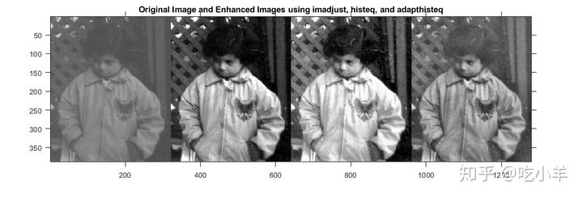
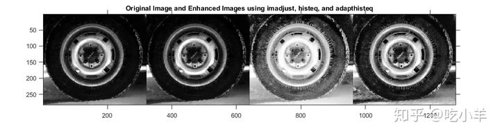
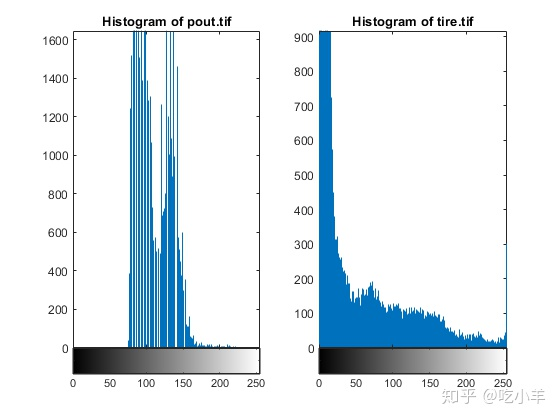
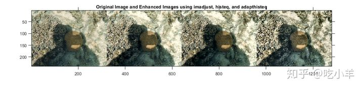

Home
此示例显示了几种图像增强方法。三个函数尤其适用于对比度增强：imadjust，histeq，和adapthisteq。本示例比较了它们在增强灰度和真彩色图像方面的用途。
增强灰度图像
使用默认设置，比较以下三种技术的有效性：
imadjust 通过将输入强度图像的值映射到新值来增加图像的对比度，从而默认情况下，在输入数据的低强度和高强度下，1％的数据处于饱和状态。
histeq执行直方图均衡化。它通过转换强度图像中的值来增强图像的对比度，以使输出图像的直方图近似匹配指定的直方图（默认情况下为均匀分布）。
adapthisteq执行对比度限制的自适应直方图均衡。与不同histeq，它在较小的数据区域（图块）而不是整个图像上运行。增强每个图块的对比度，以使每个输出区域的直方图近似匹配指定的直方图（默认情况下为均匀分布）。为了避免放大图像中可能存在的噪声，可以限制对比度增强。
将灰度图像读取到工作区中。使用三种对比度调整技术增强图像。
pout = imread('pout.tif');
pout_imadjust = imadjust(pout);
pout_histeq = histeq(pout);
pout_adapthisteq = adapthisteq(pout);
将原始图像和三个对比度调整后的图像显示为蒙太奇对照效果。
montage({pout,pout_imadjust,pout_histeq,pout_adapthisteq},'Size',[1 4])
title("Original Image and Enhanced Images using imadjust, histeq, and adapthisteq")

将第二个灰度图像读取到工作区中，并使用三种对比度调整技术增强图像
tire = imread('tire.tif');
tire_imadjust = imadjust(tire);
tire_histeq = histeq(tire);
tire_adapthisteq = adapthisteq(tire);
将原始图像和三个对比度调整后的图像显示为蒙太奇对照效果。
montage({tire,tire_imadjust,tire_histeq,tire_adapthisteq},'Size',[1 4])
title("Original Image and Enhanced Images using imadjust, histeq, and adapthisteq")

请注意，imadjust对轮胎的图像影响很小，但在pout图中却引起了巨大变化。绘制的直方图pout.tif和tire.tif显示，大多数的第一图像中的像素被集中在直方图的中心，而在的情况下tire.tif，该值已在最小值为0，最大的255从而防止之间摊开 imadjust被有效调整图像的对比度。
figure
subplot(1,2,1)
imhist(pout)
title('Histogram of pout.tif')
subplot(1,2,2)
imhist(tire)
title('Histogram of tire.tif');

另一方面，直方图均衡化实质上改变了两个图像。许多以前隐藏的特征都暴露了出来，尤其是轮胎上的碎屑颗粒。但与此同时，增强功能会使两个图像的多个区域过度饱和。注意轮胎的中心，孩子的脸的一部分和外套如何被侵蚀。
关注轮胎图像，优选的是，轮的中心保持大约相同的亮度，同时增强图像的其他区域中的对比度。为了做到这一点，必须将不同的变换应用于图像的不同部分。adapthisteq中实现的对比度受限的自适应直方图均衡技术可以实现此目的。该算法分析图像的各个部分并计算适当的变换。还可以设置对比度增强级别的限制，从而防止的基本直方图均衡方法引起的过饱和histeq。这是此示例中最复杂的技术。
增强彩色图像
彩色图像的对比度增强通常是通过将图像转换为具有图像亮度作为其分量之一的颜色空间（例如L * a * b *颜色空间）来完成的。仅在亮度层“ L *”上执行对比度调整，然后将图像转换回RGB颜色空间。操纵亮度会影响像素的强度，同时保留原始颜色。
将图像读入工作区。'shadow.tif'图像是索引图像，因此请将其转换为真彩色（RGB）图像。然后，将图像从RGB颜色空间转换为L * a * b *颜色空间。
[X,map] = imread('shadow.tif');
shadow = ind2rgb(X,map);
shadow_lab = rgb2lab(shadow);
亮度值的范围是0到100。将值缩放到[0 1]范围，这是数据类型为double的图像的预期范围。
max_luminosity = 100; L = shadow_lab(:,:,1)/max_luminosity;
在亮度通道上执行三种类型的对比度调整，并保持a *和b *通道不变。将图像转换回RGB颜色空间。
shadow_imadjust = shadow_lab; shadow_imadjust(:,:,1) = imadjust(L)*max_luminosity; shadow_imadjust = lab2rgb(shadow_imadjust); shadow_histeq = shadow_lab; shadow_histeq(:,:,1) = histeq(L)*max_luminosity; shadow_histeq = lab2rgb(shadow_histeq); shadow_adapthisteq = shadow_lab; shadow_adapthisteq(:,:,1) = adapthisteq(L)*max_luminosity; shadow_adapthisteq = lab2rgb(shadow_adapthisteq);
将原始图像和三个对比度调整后的图像显示为蒙太奇对照效果。
figure
montage({shadow,shadow_imadjust,shadow_histeq,shadow_adapthisteq},'Size',[1 4])
title("Original Image and Enhanced Images using imadjust, histeq, and adapthisteq")

======================================================================
我的测试结果及程序
下面是我测试的代码：

注：本文根据MATLAB官网内容修改而成。